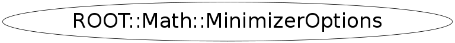

Function Members (Methods)
public:
| ~MinimizerOptions() | |
| static ROOT::Math::IOptions& | Default(const char* name) |
| static double | DefaultErrorDef() |
| static int | DefaultMaxFunctionCalls() |
| static int | DefaultMaxIterations() |
| static const string& | DefaultMinimizerAlgo() |
| static const string& | DefaultMinimizerType() |
| static double | DefaultPrecision() |
| static int | DefaultPrintLevel() |
| static int | DefaultStrategy() |
| static double | DefaultTolerance() |
| double | ErrorDef() const |
| ROOT::Math::IOptions* | ExtraOptions() const |
| static ROOT::Math::IOptions* | FindDefault(const char* name) |
| unsigned int | MaxFunctionCalls() const |
| unsigned int | MaxIterations() const |
| const string& | MinimizerAlgorithm() const |
| ROOT::Math::MinimizerOptions | MinimizerOptions(ROOT::Math::IOptions* extraOpts = 0) |
| ROOT::Math::MinimizerOptions | MinimizerOptions(const ROOT::Math::MinimizerOptions& opt) |
| const string& | MinimizerType() const |
| ROOT::Math::MinimizerOptions& | operator=(const ROOT::Math::MinimizerOptions& opt) |
| double | Precision() const |
| void | Print(ostream& os = std::cout) const |
| static void | PrintDefault(const char* name = 0, ostream& os = std::cout) |
| int | PrintLevel() const |
| static void | SetDefaultErrorDef(double up) |
| static void | SetDefaultMaxFunctionCalls(int maxcall) |
| static void | SetDefaultMaxIterations(int maxiter) |
| static void | SetDefaultMinimizer(const char* type, const char* algo = 0) |
| static void | SetDefaultPrecision(double prec) |
| static void | SetDefaultPrintLevel(int level) |
| static void | SetDefaultStrategy(int strat) |
| static void | SetDefaultTolerance(double tol) |
| void | SetErrorDef(double err) |
| void | SetExtraOptions(const ROOT::Math::IOptions& opt) |
| void | SetMaxFunctionCalls(unsigned int maxfcn) |
| void | SetMaxIterations(unsigned int maxiter) |
| void | SetMinimizerAlgorithm(const char* type) |
| void | SetMinimizerType(const char* type) |
| void | SetPrecision(double prec) |
| void | SetPrintLevel(int level) |
| void | SetStrategy(int stra) |
| void | SetTolerance(double tol) |
| int | Strategy() const |
| double | Tolerance() const |
Data Members
private:
| string | fAlgoType | Minimizer algorithmic specification (Migrad, Minimize, ...) |
| double | fErrorDef | error definition (=1. for getting 1 sigma error for chi2 fits) |
| ROOT::Math::IOptions* | fExtraOptions | extra options |
| int | fLevel | debug print level |
| int | fMaxCalls | maximum number of function calls |
| int | fMaxIter | maximum number of iterations |
| string | fMinimType | Minimizer type (Minuit, Minuit2, etc.. |
| double | fPrecision | precision of the objective function evaluation (value <=0 means left to default) |
| int | fStrategy | minimizer strategy (used by Minuit) |
| double | fTolerance | minimize tolerance to reach solution |
Class Charts
{kind=link}
{kind=link}
{kind=link}
{kind=link}

Function documentation
void SetDefaultMinimizer(const char* type, const char* algo = 0)
static methods for setting and retrieving the default options
void SetDefaultErrorDef(double up)
void SetDefaultTolerance(double tol)
void SetDefaultPrecision(double prec)
void SetDefaultMaxFunctionCalls(int maxcall)
void SetDefaultMaxIterations(int maxiter)
void SetDefaultStrategy(int strat)
void SetDefaultPrintLevel(int level)
const std::string & DefaultMinimizerType()
const std::string & DefaultMinimizerAlgo()
double DefaultErrorDef()
double DefaultTolerance()
double DefaultPrecision()
int DefaultMaxFunctionCalls()
int DefaultMaxIterations()
int DefaultStrategy()
int DefaultPrintLevel()
ROOT::Math::IOptions & Default(const char* name)
retrieve extra options - if not existing create a IOptions
void PrintDefault(const char* name = 0, ostream& os = std::cout)
print all the default options for the name given
MinimizerOptions(IOptions * extraOpts = 0)
constructor using the default options pass optionally a pointer to the additional options otehrwise look if they exist for this default minimizer and in that case they are copied in the constructed instance
double Precision() const
precision in the objective funciton calculation (value <=0 means left to default)
{ return fPrecision; }IOptions * ExtraOptions() const
return extra options (NULL pointer if they are not present)
{ return fExtraOptions; }void SetPrintLevel(int level)
non-static methods for setting options set print level
{ fLevel = level; }void SetMaxIterations(unsigned int maxiter)
set maximum iterations (one iteration can have many function calls)
{ fMaxIter = maxiter; }void SetExtraOptions(const ROOT::Math::IOptions& opt)
set extra options (in this case pointer is cloned)